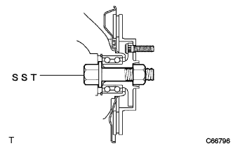

Front Differential Oil Seal (U441E) Remove |
| 1. Remove the engine Anda cover LH |
Remove two bolts and two screws and remove the engine undercover LH.
| 2. The engine Anda cover RH is removed |
Remove two bolts and two screws.
Remove the nut and remove the engine undercover RH.
| 3. Pull out the automatic trance axleflood |
Remove the drain plug and gasket and extract the fluid.
Tighten the drain plug via a new gasket.
| 4. Remove the front tire |
| 5. Remove the front axle shaft nut LH |
 |
Set the SST according to the drive shaft groove and use a hammer to solve the kashime.
Use Soketsu trench (30mm) to remove the hub nut.
| 6. Remove the front axle shaft nut RH |
The RH side is performed in the same procedure as the LH side.
| 7. Speed sensor FR LH separation |
Remove the bolt and separate the speed sensor wire and flexible hose from the shock absorber ASSY.
 |
Cut the clip from the shock absorber ASSY.
 |
Remove the bolt and separate the speed sensor FR from the steering knuckle.
| 8. Speed sensor FR RH separation |
The RH side is performed in the same procedure as the LH side.
| 9. Stabilizer bar FR separation |
 |
Fix the bolt with a spanner (10mm) and remove the nut.
Take two and two cushions and two cushions and separate the stabilizer bar.
| 10. Tie rod end sub-assy LH separation |
Remove the cotter pin and castle nut.
 |
Use SST to separate the tie rod end from the steering knuckle.
| 11. Tie rod end sub-assy RH cut off |
The RH side is performed in the same procedure as the LH side.
| 12. Front Dicek Brake Kiki ASSY LH Cut off |
 |
Remove the two bolts and separate the Dysque Brake Kikiki ASSY from the steering knuckle.
| 13. Front Dicek Brake Kiki ASSY RH separation |
The RH side is performed in the same procedure as the LH side.
| 14. Remove the front disc |
Mark the disc and axle hub and remove the disk.
| 15. Front axle assigned separation |
Use a plastic hammer to lightly hit the tip of the drive shaft ASSY and remove the shaft and axle asser.
Press the front axle ASSY to the outside of the vehicle and pull out the drive shaft ASSY from the axle ASSY.
| 16. Front axle assigned separation |
The RH side is performed in the same procedure as the LH side.
| 17. Shock absorber ASSY FR LH separation |
 |
Remove two bolts and two nuts, and separate the shock absorber Assesy from the axle ASSY.
| 18. Shock absorber ASSY FR RH cut off |
The RH side is performed in the same procedure as the LH side.
| 19. Front drive shaft ASSY LH removed |
 |
Use the SST to remove the drive shaft ASSY.
| 20. Remove the front drive shaft ASSY RH |
The RH side is performed in the same procedure as the LH side.
| 21. Fixed front axle ASSY LH |
|  |
| 22. Fixed front axle ASSY RH |
The RH side is performed in the same procedure as the LH side.
| 23. Transxal case oil seal No.2 removed |
 |
Use SST to remove the oil seal.
| 24. Trans anxle case oil seal is removed |
Use SST to remove the oil seal.